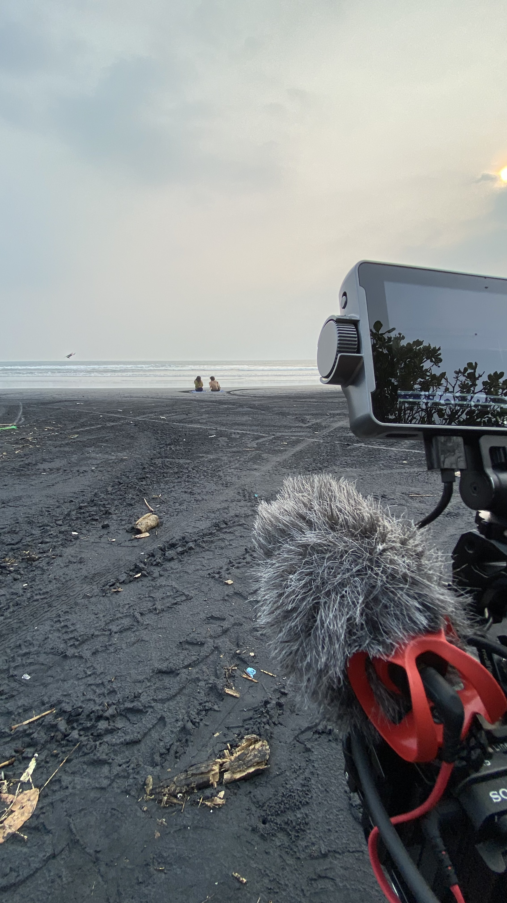
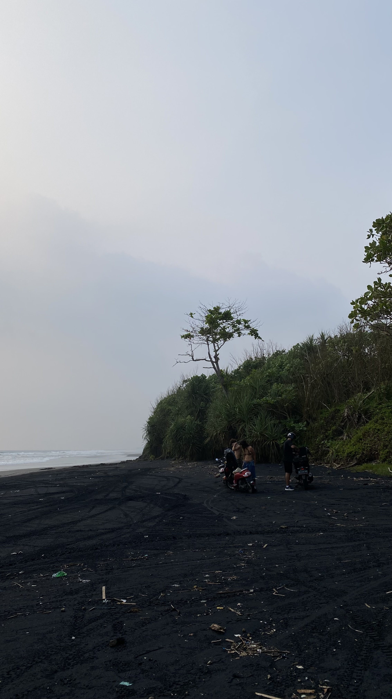
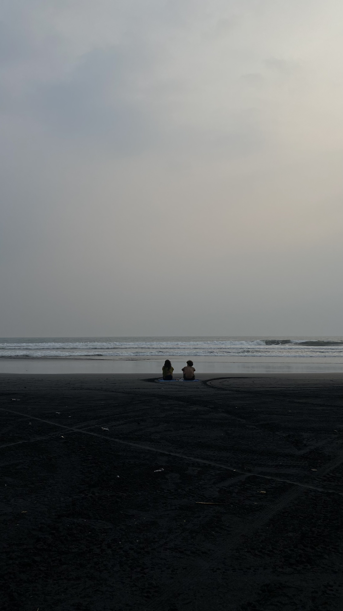
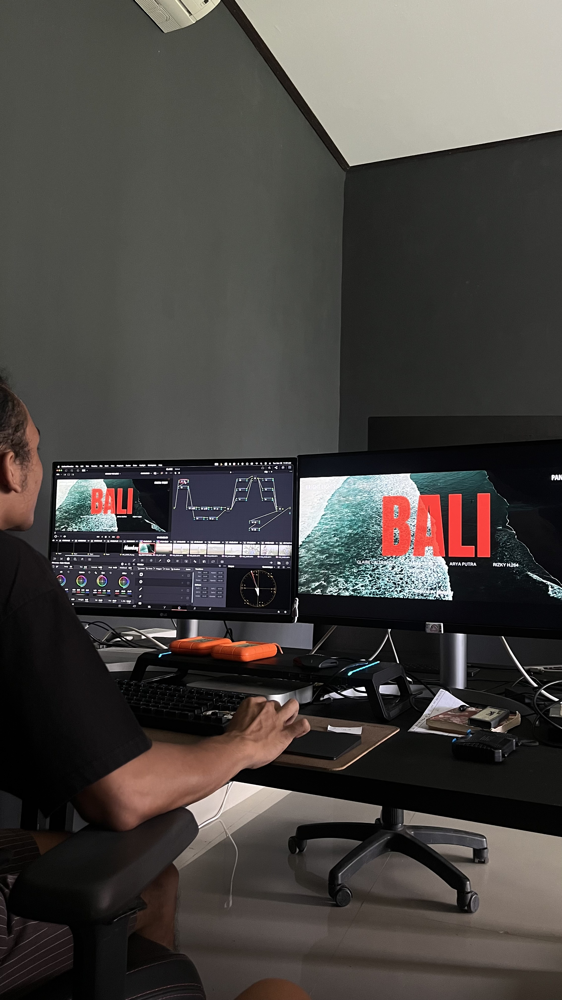
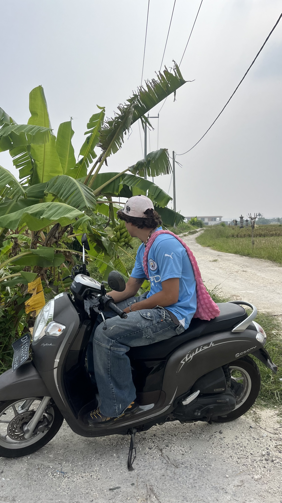

Behind the Lens
La vidéo ne s’affiche pas ? Regarder sur YouTube ↗
Lors de mon stage chez Moonkey Production, à Bali, nous avons lancé avec mon équipe le projet Behind The Lens. Le concept : chaque semaine, un membre de l’équipe réalisait un projet artistique de son choix, qu’il s’agisse d’un clip musical, d’un documentaire, d’une publicité ou d’un court-métrage. L’objectif était de créer une mini-série sur les réseaux sociaux de l’entreprise, afin de mettre en valeur la personnalité de chacun et les compétences créatives et techniques de Moonkey Production.
Pour ce premier épisode, j’ai eu l’opportunité de réaliser mon propre projet et, bien évidemment, j’ai choisi de créer un clip musical. Cette expérience m’a appris que la production audiovisuelle demande une organisation rigoureuse, mais aussi une grande capacité d’adaptation. En préproduction, j’ai affiné mes idées, recherché les lieux de tournage, imaginé les plans, trouvé les tenues et élaboré le planning. Le défi était de réaliser chaque épisode avec un budget de zéro euro, en comptant uniquement sur nos idées, notre matériel et la motivation de l’équipe.
Le jour du tournage, j’ai coordonné les équipes, partagé ma vision artistique et veillé au respect du planning. Lorsque la pluie a bouleversé nos plans, j’ai dû réorganiser rapidement le tournage pour terminer dans les temps. J’ai ensuite participé à la postproduction en échangeant avec le monteur pour obtenir le rendu souhaité.
Ce projet m’a permis de découvrir concrètement chaque étape d’une production vidéo et de développer ma créativité. Mais au-delà de l’expérience professionnelle, ce clip reste l’un de mes plus beaux souvenirs de mes six mois à Bali. À travers lui, je voulais partager ma vision de l’île, montrer les endroits peu touristiques, en montrant un Bali plus intime et authentique, celui que j’ai eu la chance de découvrir au quotidien.
Coulisses du tournage




